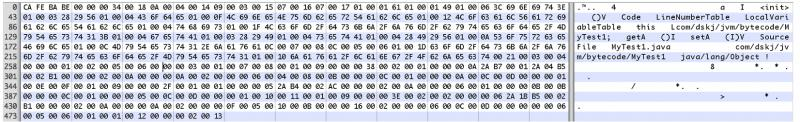
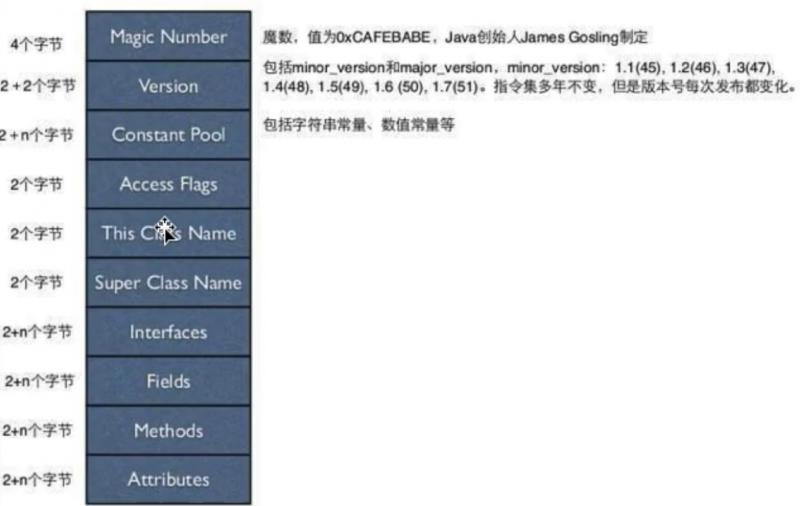
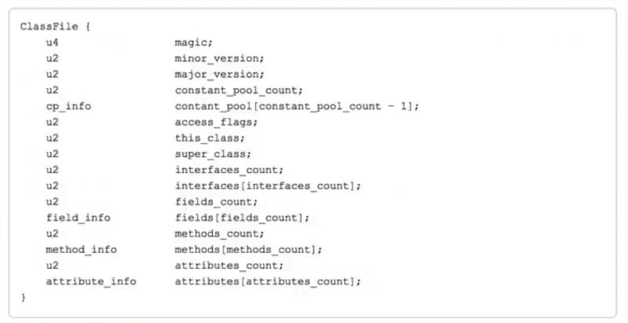
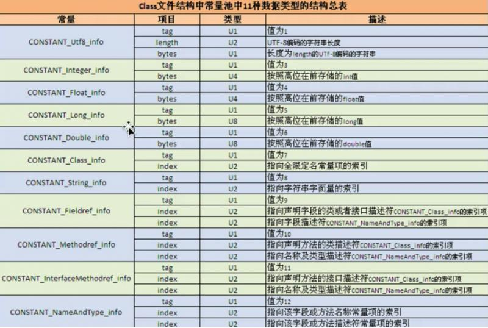
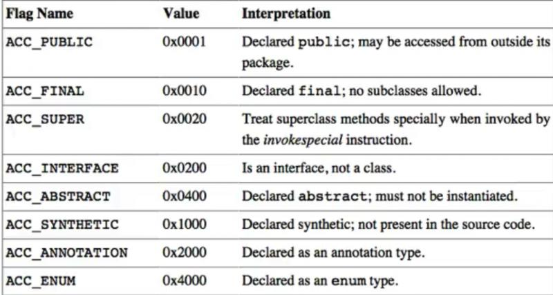
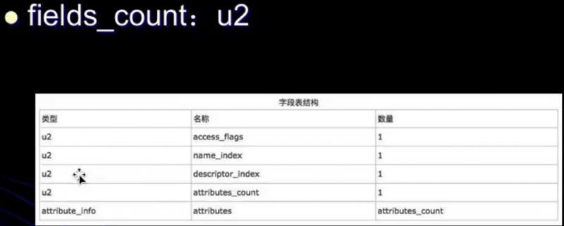
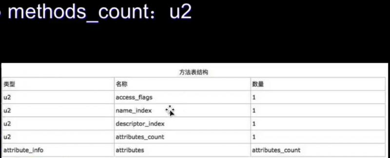
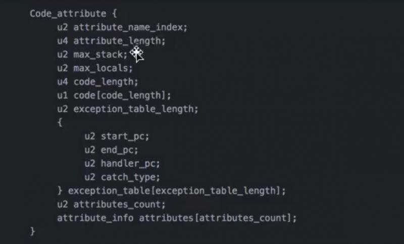

提前祝福各位读者🎄圣诞快乐！这个圣诞节请在学习中度过！
不啰嗦，直接从最最简单的一段Java源代码开启Java整体字节码分析之旅。
package com.dskj.jvm.bytecode;
public class MyTest1 {
private int a = 1;
public int getA() {
return a;
}
public void setA(int a) {
this.a = a;
}
}IDEA工具编译代码后，Terminal 终端控制台，进入到生成class文件的目录下。
执行如下命令：
javap -verbose com.dskj.jvm.bytecode.MyTest1生成字节码文件内容：
Classfile
/.../classes/com/dskj/jvm/bytecode/MyTest.class
Last modified Jul 31, 2018; size 489 bytes
MD5 checksum bdb537edd2d216ea99d6ce529073ee42
Compiled from "MyTest1.java"
public class com.dskj.jvm.bytecode.MyTest
minor version: 0
major version: 52 # JDK最大版本号
flags: ACC_PUBLIC, ACC_SUPER
Constant pool: #
#1 = Methodref #4.#20 // java/lang/Object."<init>":()V
#2 = Fieldref #3.#21 // com/dskj/jvm/bytecode/MyTest1.a:I
#3 = Class #22 // com/dskj/jvm/bytecode/MyTest1
#4 = Class #23 // java/lang/Object
#5 = Utf8 a
#6 = Utf8 I
#7 = Utf8 <init>
#8 = Utf8 ()V
#9 = Utf8 Code
#10 = Utf8 LineNumberTable
#11 = Utf8 LocalVariableTable
#12 = Utf8 this
#13 = Utf8 Lcom/dskj/jvm/bytecode/MyTest1;
#14 = Utf8 getA
#15 = Utf8 ()I
#16 = Utf8 setA
#17 = Utf8 (I)V
#18 = Utf8 SourceFile
#19 = Utf8 MyTest1.java
#20 = NameAndType #7:#8 // "<init>":()V
#21 = NameAndType #5:#6 // a:I
#22 = Utf8 com/dskj/jvm/bytecode/MyTest1
#23 = Utf8 java/lang/Object
{
public com.dskj.jvm.bytecode.MyTest1();
descriptor: ()V
flags: ACC_PUBLIC
Code:
stack=2, locals=1, args_size=1
0: aload_0
1: invokespecial #1 // Method java/lang/Object."<init>":()V
4: aload_0
5: iconst_1
6: putfield #2 // Field a:I
9: return
LineNumberTable:
line 6: 0
line 8: 4
LocalVariableTable:
Start Length Slot Name Signature
0 10 0 this Lcom/dskj/jvm/bytecode/MyTest1;
public int getA();
descriptor: ()I
flags: ACC_PUBLIC
Code:
stack=1, locals=1, args_size=1
0: aload_0
1: getfield #2 // Field a:I
4: ireturn
LineNumberTable:
line 11: 0
LocalVariableTable:
Start Length Slot Name Signature
0 5 0 this Lcom/dskj/jvm/bytecode/MyTest1;
public void setA(int);
descriptor: (I)V
flags: ACC_PUBLIC
Code:
stack=2, locals=2, args_size=2
0: aload_0
1: iload_1
2: putfield #2 // Field a:I
5: return
LineNumberTable:
line 15: 0
line 16: 5
LocalVariableTable:
Start Length Slot Name Signature
0 6 0 this Lcom/dskj/jvm/bytecode/MyTest1;
0 6 1 a I
}
SourceFile: "MyTest1.java”Mac操作系统下建议使用 Hex Fiend 工具查看 MyTest1.class 文件的十六进制格式。

十六进制文本如下，便于后续分析使用：
CA FE BA BE 00 00 00 34 00 18 0A 00 04 00 14 09 00 03 00 15 07 00 16 07 00 17 01 00 01 61 01 00 01 49 01 00 06 3C 69 6E 69 74 3E 01 00 03 28 29 56 01 00 04 43 6F 64 65 01 00 0F 4C 69 6E 65 4E 75 6D 62 65 72 54 61 62 6C 65 01 00 12 4C 6F 63 61 6C 56 61 72 69 61 62 6C 65 54 61 62 6C 65 01 00 04 74 68 69 73 01 00 1F 4C 63 6F 6D 2F 64 73 6B 6A 2F 6A 76 6D 2F 62 79 74 65 63 6F 64 65 2F 4D 79 54 65 73 74 31 3B 01 00 04 67 65 74 41 01 00 03 28 29 49 01 00 04 73 65 74 41 01 00 04 28 49 29 56 01 00 0A 53 6F 75 72 63 65 46 69 6C 65 01 00 0C 4D 79 54 65 73 74 31 2E 6A 61 76 61 0C 00 07 00 08 0C 00 05 00 06 01 00 1D 63 6F 6D 2F 64 73 6B 6A 2F 6A 76 6D 2F 62 79 74 65 63 6F 64 65 2F 4D 79 54 65 73 74 31 01 00 10 6A 61 76 61 2F 6C 61 6E 67 2F 4F 62 6A 65 63 74 00 21 00 03 00 04 00 00 00 01 00 02 00 05 00 06 00 00 00 03 00 01 00 07 00 08 00 01 00 09 00 00 00 38 00 02 00 01 00 00 00 0A 2A B7 00 01 2A 04 B5 00 02 B1 00 00 00 02 00 0A 00 00 00 0A 00 02 00 00 00 06 00 04 00 08 00 0B 00 00 00 0C 00 01 00 00 00 0A 00 0C 00 0D 00 00 00 01 00 0E 00 0F 00 01 00 09 00 00 00 2F 00 01 00 01 00 00 00 05 2A B4 00 02 AC 00 00 00 02 00 0A 00 00 00 06 00 01 00 00 00 0B 00 0B 00 00 00 0C 00 01 00 00 00 05 00 0C 00 0D 00 00 00 01 00 10 00 11 00 01 00 09 00 00 00 3E 00 02 00 02 00 00 00 06 2A 1B B5 00 02 B1 00 00 00 02 00 0A 00 00 00 0A 00 02 00 00 00 0F 00 05 00 10 00 0B 00 00 00 16 00 02 00 00 00 06 00 0C 00 0D 00 00 00 00 00 06 00 05 00 06 00 01 00 01 00 12 00 00 00 02 00 13
前面都是铺垫，来到重磅分析的一节。
Java字节码整体结构如下图所示，以下图示以不同纬度展示了字节码结构中所包含的关键内容。
Java字节码整体结构图：

完整的Java字节码结构图：

接下来结合十六进制格式的 class 文件，参照 Java字节码文件来剖析下都包含了哪些内容。
1）4个字节，Magic Number
魔数，值为0xCAFEBABE，这是Java创始人James Gosling制定
2）2+2个字节，Version
包括minor_version和major_version，major_version：1.1（45），1.2（46），1.3（47），1.4（48），1.5（49），1.6（50），1.7（51），1.8（52），1.9（53），1.10（54）
3）2+n个字节，Constant Pool
包括字符串常量、数值常量等
4）2个字节，Access Flags
访问标记，标记当前的类是public、final、abstract等等，是不是满足某些特定要求。
5）2个字节，This Class Name
当前类的名字
6）2个字节，Super Class Name
当前类所属父类的名字
7）2+n个字节，Interfaces
当前类所实现的接口
8）2+n个字节，Fields
字段表，描述了当前类的字段的各种各样的信息
9）2+n个字节，Methods
方法表，当前类所定义的方法，这部分内容相对比以上字节结构是比较不容易理解
因为在我们一个类的定义当中方法是最常见的，方法里面包含若干的重要信息，包含签名、访问修饰符、名字、方法的执行代码逻辑、返回值等等。
这些方法也是以信息的形式存储在编译之后的字节码class文件当中，接下来，JVM去执行字节码文件时，当你调用某个特定方法时，JVM才能根据你所编写的源代码的意图去执行字节码里的指令。
对于这个方法来说，在JVM中最终是形成一条条指令的去执行的，也就是说在字节码里形成的每一条指令对应源码文件中的每一行源代码。
这些指令也可以称作为助记符，比如aload_0，iload_1等。
10）2+n个字节，Attributes
附加属性
Class字节码中有两种数据类型：
字节数据直接量：这是基本的数据类型。共细分为u1、u2、u4、u8四种，分别代表连续的1个字节、2个字节、4个字节、8个字节组成的整体数据。
表（数组），是一种复合的数据结构，表是由多个基本数据或其他表，按照既定顺序组成的大的数据集合。表是有结构的，它的结构体现在：组成表的成分所在的位置和顺序都是已经严格定义好的。
接下来，我们使用 javap -verbose 命令分析一个字节码文件时，将会分析该字节码文件的魔数、版本号、常量池、访问标记、类信息、类变量、类的成员变量、类的构造方法与类中的方法信息等信息。
魔数：所有的.class字节码文件的前4个字节都是魔数，文件中魔数为：CA FE BA BE，魔数值为固定值：0xCAFEBABE（咖啡宝贝?），这个值的获得很有“浪漫气息”，其作用是确定这个文件是否为一个能被虚拟机接受的Class文件。
版本号：魔数之后的4个字节为Class文件版本信息，前两个字节表示minor version（次版本号），后两个字节表示major version（主版本号）。
这里的版本号为00 00 00 34，换算成十进制（3 * 16的1次方 + 4 = 52），表示次版本号为0，主版本号为52。
所以，该文件的版本号为：1.8.0。可以通过java -version命令来验证这一点。Java的版本号是从45开始的，JDK1.0之后大的主版本号线上加1，如JDK1.1（45）、JDK1.2（46）以此类推JDK1.8（52）。
常量池（constant pool）：紧接着主版本号之后的就是常量池入口。
一个Java类中定义的很多信息都是由常量池来维护和描述的，可以将常量池看作是Class文件的资源仓库，比如说Java类中定义的方法与变量信息，都是存储在常量池中。由于常量池中常量的数量是不固定的，故在常量池入口需要放置一项u2类型的数据，代表常量池容量计数值（constant_pool_count）。
这里的容量计数是从1开始的，十六进制数为：00 18，转换为十进制为24，代表常量池中有24项常量，索引值范围1~24。
常量池数组中元素的个数 = 常量池数 - 1（其中0暂时不使用），所以Java字节码文件中constant_pool中只看到了23项目常量。那为什么容量计数不从0开始呢？具体原因下一节说明。
常量池中主要存储两类常量：
字面量：字面量如文本字符串，Java中声明为final的常量值等。
符号引用：类和接口的全局限定名，字段的名称和描述符，方法的名称和描述符等。
Java类所对应的常量池主要由常量池数量与常量池数组（常量表）这两部分共同构成。
常量池数量紧跟在主版本号后面，占据2个字节；常量池数组紧跟在常量池数量之后。常量池数组与一般的数组不同的是，常量池数组中元素的类型、结构都是不同的，长度当然也就不同；但是，每一种元素第一个数据都是一个u1类型，该字节是个标志位，占据1个字节。
JVM在解析常量池时，会根据这个u1类型来获取元素的具体类型。值得注意的是，常量池数组中元素的个数 = 常量池数 - 1（其中0暂时不使用），目的是满足某些常量池索引值的数据在特定情况下需要表达「不引用任何一个常量池」的含义；根本原因在于，索引为0也是一个常量（保留常量），只不过它不位于常量表中，这个常量就对应null值；所以，常量池的索引从1而非0开始。
Class文件结构中常量池中实际是有14种数据类型的，12~14种数据类型是在JDK1.7之后添加进来的（新增三种类型分别为：CONSTANT_MethodHandle_info、CONSTANT_MethodType_info、CONSTANT_InvokeDynamic_info），主要是为了更好的支持动态语言调用的。但是，最常用如下所列的列出了11种常规的数据类型：

上述常量都是以「CONSTANT」开头，以「info」结尾的常量名。每一个常量包含的信息的段都是不同的，我们可以根据每一个段自身的起始和结束位置是什么来进行分析。
抽出两个代表性的常量进行解析：
CONSTANT_Utf8_info
如果这个tag的值为1，占1个字节，它就表示的UTF-8编码的字符串；length，占2个字节，比如length值是4，表示的是从length的下后面读取4个字节长度的字符串。
这个就表示CONSTANT_Utf8_info的具体的文本内容。就是说根据length就能够知道接下来我要读取多少个字节才能读完，这些字节是由bytes来表示的。
CONSTANT_Fieldref_info
tag是U1类型，值为9。有两个index值，都是U2类型的，第一个index代表的是指向声明字段的类或接口描述符CONSTANT_Class_info的索引项，第二个index代表的指向字段描述符CONSTANT_NameAndType_info的索引项。
具体可以理解为当我们定义一个字段时，一定是附属在某一个类上的，所以要先索引到类信息上，可以具体看下CONSTANT_Class_info，其tag是U1类型，值为7，它的index代表指向全限定名常量项的索引，很好理解了。
然后再找到这个字段的描述符，这里指向了会索引到CONSTANT_NameAndType_info，其tag是U1类型，值为12，根据两个index的描述可以理解为要有字段或方法的名称以及字段或方法的描述符即可找到源码中对应的字段和方法。
接下来，我们以上述Java字节码结构总表为依据分析下Java字节码十六进制对应到Java字节码文件中的constant_pool常量池。
Java字节码十六进制：
从第9位开始的十六进制
0A 00 04 00 14 0A表示值为10，从字节码结构总表中找到值为10的是CONSTANT_Methodref_info，有两个index值，第一个index占用的字节 00 04 转换为十进制为4，第二个index占用的字节00 14 转化为十进制为20。
从Java字节码文件中Constant pool定义可看到：
Constant pool: #
#1 = Methodref #4.#20 // java/lang/Object."<init>":()V 索引到位置#4和#20，从常量池中找到这两个索引项如下：
#4 = Class #23 // java/lang/Object
#20 = NameAndType #7:#8 // "<init>":()V 这两个索引正好可以跟结构总表中对应上。其中，#4表示的类全限定名为java/lang/Object，而索引20位置又引用了#7:#8。继续找到#7和#8：
#7 = Utf8 <init>
#8 = Utf8 ()V 从第16位开始的十六进制
09 00 03 00 15 这个标志位值为09，从字节码结构总表中找到值为9的常量为CONSTANT_Fieldref_info，其后面跟着两个index，对应十六进制转换为十进制为3和21。
#2 = Fieldref #3.#21 // com/dskj/jvm/bytecode/MyTest1.a:I 对应有两个索引项#3和#21，如下所示：
#3 = Class #22 // com/dskj/jvm/bytecode/MyTest1
#21 = NameAndType #5:#6 // a:I 索引项#3引用了索引项#22，索引项#21引用了索引项#5:#6
#22 = Utf8 com/dskj/jvm/bytecode/MyTest1
#5 = Utf8 a
#6 = Utf8 I根据以上，#5表示的变量名为a，#6表示的变量a的返回类型是I，即int类型的。也就知道了#2 = Fileldref，对应的是com/dskj/jvm/bytecode/MyTest1.a:I。
对应到MyTest1类的变量：
private int a = 1;从第21位开始的十六进制
07 00 16 标志位为07，值为7字节码结构总表中对应常量CONSTANT_Class_info，索引占用2个字节，对应转换为十进制为22。
#3 = Class #22 // com/dskj/jvm/bytecode/MyTest1
#22 = Utf8 com/dskj/jvm/bytecode/MyTest1从第27位开始的十六进制
十六进制字节码文件：
01 00 01 61 01 00 01 49 01 00 06 3C 69 6E 69 74 3E 01 00 03 28 29 56 01 00 04 43 6F 64 65 01 00 0F 4C 69 6E 65 4E 75 6D 62 65 72 54 61 62 6C 65
查找标志位为01 ，值为1的结构总表常量为CONSTANT_Utf8-info，length的占用2个字节十六进制为 00 01 ，那么length长度就是1（转换为十进制的值，即0 * 16的一次方 + 1），后面找到1个字节为61，通过HexFiend工具也能看到指向了a。
所以，找到的十六进制：01 00 01 61
常量池中进一步印证下：
#5 = Utf8 a 十六进制字节码文件：
01 00 01 49 01 00 06 3C 69 6E 69 74 3E 01 00 03 28 29 56 01 00 04 43 6F 64 65 01 00 0F 4C 69 6E 65 4E 75 6D 62 65 72 54 61 62 6C 65...
继续查找标志位为01 ，值为1的结构总表常量为CONSTANT_Utf8-info，length的占用2个字节十六进制为 00 01 ，那么length长度就是1，后面找到1个字节为49，通过HexFiend工具也能看到指向了I。
所以，找到的十六进制：01 00 01 49
常量池中进一步印证下：
#6 = Utf8 I 十六进制字节码文件：
01 00 06 3C 69 6E 69 74 3E 01 00 03 28 29 56 01 00 04 43 6F 64 65 01 00 0F 4C 69 6E 65 4E 75 6D 62 65 72 54 61 62 6C 65...继续查找标志位为01 ，值为1的结构总表常量为CONSTANT_Utf8-info，length的占用2个字节十六进制为 00 06 ，那么length长度就是6（转换为十进制的值，即0 * 16的一次方 + 6），后面找到6个字节为 3C 69 6E 69 74 3E，通过HexFiend工具也能看到指向了<init>。
所以，找到的十六进制：01 00 06 3C 69 6E 69 74 3E
常量池中进一步印证下：
#7 = Utf8 <init> 以此类推，最终都能通过十六进制字节码并结合字节码结构总表分析在常量池中找到对应的字节码内容。
访问标志信息包括该Class文件是类还是接口，是否被定义成public，是否是abstract，如果是类，是否被声明成final。通过上面的MyTest1源代码，我们知道该文件是类并且是public的。
Access_Flag访问标志结构表：

上述MyTest1类十六进制字节码中的位置：0x 00 21
这个 0x 00 21 是访问标志结构表中的 0x 00 20 和 0x 00 01 的并集，表示 ACC_PUBLIC 与 ACC_SUPER。
public class com.dskj.jvm.bytecode.MyTest1
...
flags: ACC_PUBLIC, ACC_SUPER 访问标志之后的是This Class Name，对应十六进制为 0x 00 03
在常量池项目类型中查找：
#3 = Class #22 // com/dskj/jvm/bytecode/MyTest1 This Class Name之后的是Super Class Name，对应十六进制为 0x 00 04
在常量池项目类型中查找：
#4 = Class #23 // java/lang/Object Interfaces
接口包括两部分，第一个是interfaces_count(接口个数)，第二部分interfaces(接口名)。
当前这个类对应的十六进制：00 00 转换为十进制仍然是0，说明当前这个类是没有实现任何接口的。
因此，这个interfaces接口表就不会再出现了。如果接口数量interfaces_count大于等于1的话，那么这个interfaces接口表是存在的。
Fields
字段包括两部分，第一个是fields_count(字段个数)，第二部分fields(字段名)。
当前这个类对应的十六进制：00 01 转换为十进制值为1，说明这个类内部有一个字段。
字段表集合
字段表用于描述类和接口中声明的变量。这里的字段包含了类级别变量以及实例变量，但是不包括方法内部声明的局部变量。
字段表结构：

第一个是access_flags访问标志符，如public、private、protected、final、abstract等等。
第二个name_index和第三个descriptor_index两个构成一个字段结构的完整信息。
attributes_count是字段的独有的信息，如果值是0，后面的attributes也就不存在了。
具体结构示例：
当前类字段对应的十六进制如下所示：
field_info {
u2 access_flags; 0002
u2 name_index; 0005
u2 descriptor_index; 0006
u2 attributes_counts; 0000
attribute_info attributes[attributes_count];
}0x0002在访问标志结构表中对应的是ACC_PRIVATE。
名称索引 0x0005 与 描述符索引 0x0006 转换为十六进制为 5 和 6，从 常量池结构表中查找结果：
#5 = Utf8 a
#6 = Utf8 I附加属性的数量为0x0000，转换为十进制为0，后面的附加属性attributes也就不会出现了。
00 03 // methods_count
00 01 // access_flags
00 07 // name_index
00 08 // descriptor_index
00 01 // attributes_count
00 09 // attribute_name_index
00 00 00 38 // attribute_length
00 02 // 附加属性的 max_stacks
00 01 // 附加属性的 max_locals
00 00 00 0A // 附加属性的 code_length
2A B7 00 01 2A 04 B5 00 02 B1 // code_lengthc长度的字节，具体执行的字节码指令
00 00 00 02 00 0A 00 00 00 0A 00 02 00 00 00 06 00 04 00 08 00 0B 00 00 00 0C 00 01 00 00 00 0A 00 0C 00 0D 00 00 00 01 00 0E 00 0F 00 01 00 09 00 00 00 2F 00 01 00 01 00 00 00 05 2A B4 00 02 AC 00 00 00 02 00 0A 00 00 00 06 00 01 00 00 00 0B 00 0B 00 00 00 0C 00 01 00 00 00 05 00 0C 00 0D 00 00 00 01 00 10 00 11 00 01 00 09 00 00 00 3E 00 02 00 02 00 00 00 06 2A 1B B5 00 02 B1 00 00 00 02 00 0A 00 00 00 0A 00 02 00 00 00 0F 00 05 00 10 00 0B 00 00 00 16 00 02 00 00 00 06 00 0C 00 0D 00 00 00 00 00 06 00 05 00 06 00 01 00 01 00 12 00 00 00 02 00 13Methods
方法包括两部分，第一个是methods_count(方法个数)，第二部分methods(方法名)。
当前这个类对应的十六进制：00 03转换为十进制值为3，说明这个类内部有三个方法。
三个方法为：
setA()、getA()，以及默认无参的构造方法。
方法表结构：

具体含义类似于上述的字段表结构。
access_flags 对应的十六进制：00 01 在标志结构表中查找为ACC_PUBLIC。
name_index名称索引对应十六进制 00 07 descriptor_index描述符索引对应十六进制 00 08
分别转换为十进制为 7 和 8，在常量池中查找结果：
#7 = Utf8 <init> // 表示这个类的构造方法
#8 = Utf8 ()V // 表示不接收任何参数的不返回结果的描述符attributes_count对应十六进制：00 01 ，其个数为1，表示会有一个附加属性。也说明了有一个attributes。
方法的属性结构构成：
方法中的每一个属性都是一个atrribute_info结构。
atrribute_info {
u2 atrribute_name_index;
u4 attribute_length;
u1 info[atrribute_length];
} attribute_name_index对应十六进制为 00 09，在常量池结构表中查找结果：
#9 = Utf8 Code 从字节码中每一个方法中都能体现出来，比如默认构造方法：
public com.dskj.jvm.bytecode.MyTest1();
descriptor: ()V
flags: ACC_PUBLIC
Code:
...然后根据 atrribute_length 对应十六进制为 00 00 00 38 转换为十进制为3 * 16的一次方 + 8 = 56
说明在这个十六进制后面找到56个字节作为Code这个属性的具体的值。
方法表结构:
前三个字段和field_info一样。
method_info {
u2 access_flags;
u2 name_index;
u2 descriptor_index;
u2 attributes_count;
attribute_info attributes[attributes_count]
}方法的属性结构:
Code结构：

Code attribute的作用是保存该方法的结构，如所对应的字节码。
那么，这些十六进制是怎么和下面的助记符对应的呢？
我们通过jclasslib工具（字节码查看工具，支持IDEA插件形式安装）查看时，点击助记符的链接会跳到Oracle官网可查看具体详细解释。
第一个助记符: 0: aload_0 打开链接可以看到：
链接地址：
https://docs.oracle.com/javase/specs/jvms/se8/html/jvms-6.html#jvms-6.5.aload_n
具体解释内容所示：
aload_<n>
Operation
Load reference from local variable
Format
aload_<n>
Forms
aload_0 = 42 (0x2a) // 通过这里就能直接看到 aload_0 对应的十进制是42，转换为十六进制就是 0x2a，对应字节码文件中的 2A
aload_1 = 43 (0x2b)
aload_2 = 44 (0x2c)
aload_3 = 45 (0x2d)
Description
The <n> must be an index into the local variable array of the current frame (§2.6). The local variable at <n> must contain a reference. The objectref in the local variable at <n> is pushed onto the operand stack.
这个<n>必须是一个到当前栈帧局部变量数组的一个索引，位于<n>位置上的局部变量会包含一个引用，位于<n>位置上的局部变量的这个引用会被推送到栈顶（准备进行操作）。
第二个助记符：
1: invokespecial #1 // Method java/lang/Object."<init>":()V
连接地址：https://docs.oracle.com/javase/specs/jvms/se8/html/jvms-6.html#jvms-6.5.invokespecial
invokespecial
Operation
Invoke instance method; special handling for superclass, private, and instance initialization method invocations
Format
invokespecial
indexbyte1
indexbyte2
Forms
invokespecial = 183 (0xb7)
Operand Stack
..., objectref, [arg1, [arg2 ...]] →
...
具体字节码即是该方法被调用时，虚拟机所执行的字节码。
exception_table，这里存放的是处理异常的信息。
每个exception_table表项由start_pc，end_pc，handler_pc，catch_type组成。
start_pc和end_pc表示在code数组中的从start_pc到end_pc处（包含start_pc，不包含end_pc）的指令抛出的异常会由这个表项来处理。
handler_pc表示处理异常的代码的开始处。catch_type表示会被处理的异常类型，它指向常量池里的一个异常类。当catch_type为0时，表示处理所有的异常。
附加属性
LineNumberTable：这个属性用来表示code数组中的字节码和Java代码行数之间的关系。这个属性可以用来在调试的时候定位代码的执行行数。
LocalVariableTable：局部变量表，当前类中只有唯一的局部变量，而这个局部变量就是this当前对象。
局部变量表属性类似于行号表属性。
请注意：
Java源代码角度：Java类中的实例方法中可以直接使用this。
Java字节码角度： Java类中的非静态方法，即实例方法中的这个this实际是通过编译器隐示的作为方法的第一个参数传递进来（有点类似于Python中的方法，其方法中的第一个参数都会传递一个self变量，表示当前对象本身）。这样使得每一个实例方法内部都可以很顺利的访问this。换句话说针对类的实例方法它至少会有一个LocalVariable局部变量，这个变量就是this。
在JVM规范中，每个变量/字段都有描述信息，描述信息主要的作用是描述字段的数据类型、方法的参数列表（包括数量、类型与顺序）与返回值。根据描述符规则，基本数据类型和代表无返回值的void类型都用一个大写字符来表示，对象类型则使用字符L加对象的全限定名称来表示。为了压缩字节码文件的体积，对于基本数据类型，JVM都只使用一个大写字母来表示，如下所示：
B - byte，C - char，D - double，F - float，I - int，J - long，S - short，Z - boolean，V - void，L - 对象类型，如Ljava/lang/String；
数组类型：
针对数组类型来说，每一个维度使用一个前置的[来表示，如:
int[]数组被记录[I，String[][]二维数组被记录为[[Ljava/lang/String；
方法描述符
用描述符描述方法时，按照先参数列表，后返回值的顺序来描述。参数列表按照参数的严格顺序放在一组()之内，如方法：
String getInfoByIdAndName(int id, String name)，该方法的描述符为：（I, Ljava/lang/String;）Ljava/lang/String;Java字节码文件的工具推荐：
https://github.com/ingokegel/jclasslib
参考及推荐书籍：
深入理解Java虚拟机
欢迎关注我的公众号，扫二维码关注，文章首发到公众号，与你一同成长~